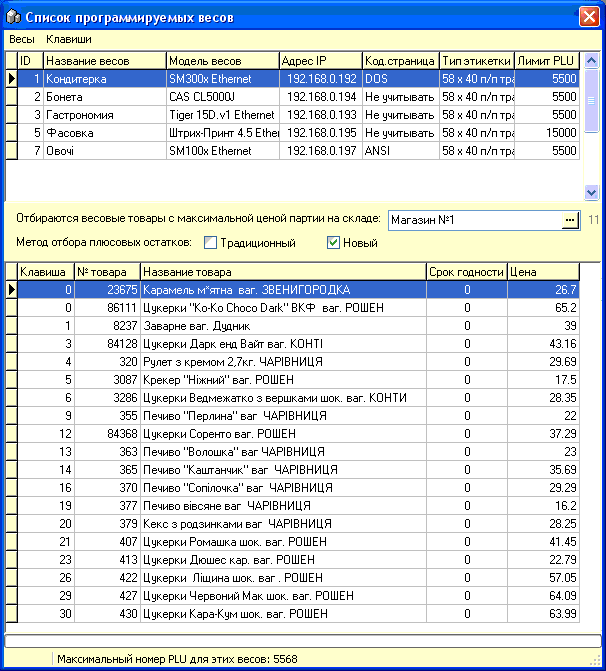
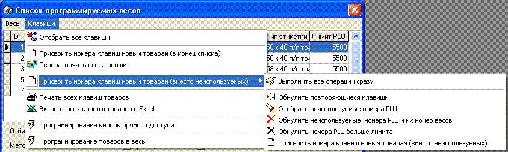
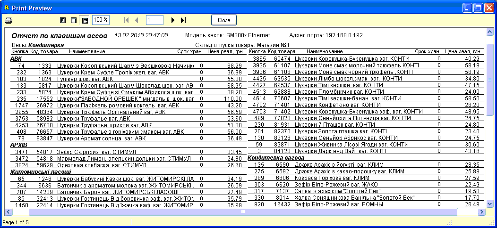

В средней части окна находятся следующие
параметры отбора товаров для весов:
1. Склад по которому отбирать текущую розничную
цену нужных товаров (по умолчанию, при открытии формы, сюда подставляется
значение указанное в настройках программы на вкладке "Весы с печатью". Также
на отбор влияют другие параметры, указанные в настройках, например, отбирать
или нет скрытые товары.
2. Метод отбора товаров, состоит из двух
флажков, доступно 3 варианта:
2.1. Ни один флажек не установлен -
без контроля остатков товара - отбираются все весовые товары по данному
складу, присвоенные выбранным весам, а также такие же штучные товары, у
которых непустой является первая строка дополнительной информации для этикетки
58х60 (сведения об ингредиентах);
2.2. Установлен флажек
"Традиционный" - отбираются все весовые товары с хотя бы одной положительной
партией по данному складу, присвоенные выбранным весам, а также такие
же штучные товары, у которых непустой является первая строка
дополнительной информации для этикетки 58х60 (сведения об
ингредиентах);
2.3. Установлен флажек "Новый" -
отбираются все весовые товары с суммарным остатком >0 по данному
складу, присвоенные выбранным весам, а также такие же штучные товары, у
которых непустой является первая строка дополнительной информации для этикетки
58х60 (сведения об ингредиентах);
Наиболее правильным с точки зрения актуальности
отбираемых данных является использование флажка "Новый".

Для работы с отобранными записями товаров
используется меню "Клавиши", рассмотрим их подробнее:

Отобрать все клавиши - когда вы перемещаетесь
между весами в верхней части окна, клавиши перечитываются автоматически,
однако, когда весы одни или вы не хотите переходить между ними для обновления,
нажмите эту кнопку и список весов обновится согласно тех критериев
отбора, что были указаны.
Присвоить номера клавиш новым товарам (в конец
списка) - наиболее простой способ присвоения номеров новым товарам,
которые были присвоены этим весам - они отображаются вначале списка с номерами
равными нулю. Программа проверяет какой номер товара имеет максимальный
номер PLU для данных весов (даже если этот товар не отобран в список, потому
что не соответствует нужным критериям) и продолжает нумерацию. Значение
лимита PLU не принимается во внимание. Способ хорош тем, что очень быстро
работает, но минус его в том, что при большом количестве товаров и малом
объеме оперативной памяти весов нумерация может выйти за предел, который будет
программироваться в весы. Симптомами этой проблемы является что через
несколько лет работы магазина, при большом количестве товаров, последние
товары в списке перестают программироваться в весы.
Переназначить все клавиши - при нажатии для
текущего списка отобранных клавиш будет выполнена перенумерация PLU
данных товаров, начиная с единицы и до номера максимального разрешенного
лимитом PLU. Плюсом является высокая скорость данной
обработки. Минус - то, что нумерация клавиш может измениться,
работникам придется заново запоминать распостраненные клавиши. Внимание! для того, чтобы не возникало
задвоенных PLU, проводите данную операцию, отобрав клавиши при снятых флажках
методов отбора "Традиционный" и "Новый".
Присвоить номера клавиш новым товарам (вместо
неиспользуемых) - Выполнить все операции сразу - меню позволяет выполнить все
операции по сервису клавиш весов одним нажатием этого пункта меню. Плюс
способа - будут устранены все недостатки списка. Минусы - медленная работа
способа и то, что нумерация клавиш может измениться, работникам придется
заново запоминать распостраненные клавиши.
Печать всех клавиш товаров - выводит на печать
список отобранных клавиш товаров, формат списка может отличаться в зависимости
от опций на вкладке "Весы с печатью" в настройках программы. Для примера,
рисунок ниже:

Программирование кнопок прямого доступа - для
весов самообслуживания - смотрите следующий раздел справки.
Программирование товаров в весы - когда вы
уверены в правильности списка, весы подключены в компьютерную сеть,
нажмите данный пункт меню. Произойдет запись товаров в весы. Ход записи
отображается в строке состояния формы.